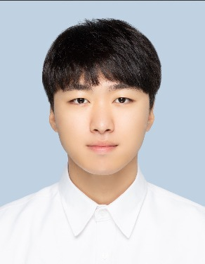

Extreme Mechanics Lab, Department of Mechanical Engineering, POSTECH, Pohang, Korea
I am an M.S. candidate in Mechanical Engineering at POSTECH.
My concentration is in origami-based design and structural mechanics.
Thick-panel origami · Reconfigurable structures · Load-bearing origami
Education
Biography
I am an M.S. candidate in Mechanical Engineering at POSTECH (Pohang University of Science and Technology), working in the Extreme Mechanics Lab under Prof. Anna Lee. My research is centered on thick-panel origami and reconfigurable systems, including the kinematics and mechanics of origami-based structures.
Before POSTECH I received my B.S. in Mechanical & Control Engineering from Handong Global University, where I worked as an undergraduate researcher in the Human Robotics Lab under Prof. Jaehyo Kim on the analysis of human reaching motion.
Select a card to read more.
Research statement, skills and references
A crease pattern that folds cleanly on paper stops working once the panels have real thickness: the facets collide, and the single degree of freedom that made the pattern useful disappears. My work is about restoring that motion in thick, load-bearing panels — and about getting more than one folded configuration out of a single assembly.
At POSTECH I proposed an extended offset crease method that accommodates thickness while keeping a diamond vertex foldable in two directions, and analyzed the resulting kinematics with a Lagrange multiplier and nullspace projection formulation. I also build what I design: laser-cut panel prototypes, pneumatic actuators based on thickness-accommodated Kresling patterns, and finite element models for industrial structures.
Skills
References
Topics I am currently working on
Positions and projects
Positions
Projects
Journal articles, conference presentations and domestic papers
Journal Articles
Bi-Directional Folding of Diamond-Vertex Thick-Panel Origami for Reconfigurable Structures
Design and development of a propellant-driven micro pneumatic actuator using Lab-on-PCB technology + equally contributed
Elastic Resistance and Shoulder Movement Patterns: An Analysis of Reaching Tasks Based on Proprioception — Bioengineering, vol. 11, no. 1, p. 1 † equally contributed
doi.org/10.3390/bioengineering11010001 ↗Domestic Journal
Development of Mathematical and Finite Element Models for Predicting Work-roll Deformation in a 4-high Hot Rolling Mill — Transactions of Materials Processing, vol. 35, no. 1 * equally contributed
doi.org/10.5228/KSTP.2026.35.1.1 ↗Conference Presentations
Thickness-accommodating method for multi-configurable thick origami with bidirectional folding — International Conference on Precision Engineering and Sustainable Manufacturing, Chiang Mai, Thailand, July 2025
Development of a micro pneumatic actuator driven by propellant utilizing Lab-on-PCB technology — KSME Annual Meeting (80th Anniversary), Korean Society of Mechanical Engineers, 2025
Fellowships and competition awards
POSTECH, Korea · 2025
Ministry of SMEs and Startups, Korea · 2022